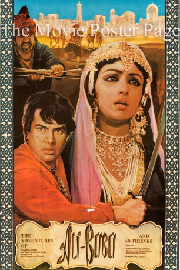

#11873 Ali Baba und die 40 Räuber
 
 IMDB-Wertung: 6.2 / 10
IMDB-Wertung: 6.2 / 10  Metascore: 0
Metascore: 0 
Alibaba, (Dharmendra) a native of Guleba is in love with Marjina (Hema Malini). The town has a ruler, Abu Hasan. Guleban is terrorized by dacoits. Ali Baba hears the password to the door of the cave of the dacoits and takes a lot of jewels from the cave. His brother is killed by the dacoits as he forgets the password and is trapped inside. A young girl whose father has been murdered by the dacoits (Zeenat Aman) has a score to settle with Abu Hasan. Abu Hasan turns out to be the head of the dacoits and he comes to know that Ali Baba visits the cave. He hides the 40 thieves in large urns to kill Ali Baba. Ali Baba comes to know of this and kills them all. He brings to light the startling truth that their own ruler heads the dacoits!
Jahr: 1980
Dauer: 130 Minuten
FSK:
Land: Soviet-Union Studio: Ustredni Pujcovna FilmuTonspuren:
Untertitel:
Auflösung: SD (640x272) Größe: 1198 MB
Genre: Action, Abenteuer, Fantasy, Familie, Liebe
Regisseur: Latif Faiziyev, Umesh Mehra
Drehbuch: Shanti Prakash Bakshi, Boris Saakov
Soundtrack: Rahul Dev Burman, Vladimir Milov
Darsteller:
- Dharmendra als Ali-Baba
- Hema Malini als Marjina
- Zeenat Aman als Fatima
- Prem Chopra als Shamsher
- Zakir Mukhamedzhanov als Yusuf, Ali-Baba's father
- Sofiko Chiaureli als Ali-Baba's mother
- Madan Puri als Fatima's dad
- Yakub Akhmedov als Kasym
- Rolan Bykov als The Vizier / The Thieves Chief
- Khodzha Durdy Narliyev als Khamid
- Mher Mkrtchyan als Mustafa
- Dzhavlon Khamrayev als Mukhamed
- Elena Sanaeva als The ghost of the cave
- Vakhob Abdullayev als
- Inogam Adylov als The Bandit
- Bakhtiyer Ikhtiyarov als
- Pinchoo Kapoor als Alampana Shah Farvez
- Anvar Kendzhayev als The Bandit
- Maksud Mansurov als Jangir
- Mac Mohan als Mahmud
- Khabib Narimanov als Inhabitant Of Gulabad (uncredited)
- Uchkun Rakhmanov als The Merchant (uncredited)
- Maryam Yakubova als Rich Woman (uncredited)
- Khamza Umarov als Akhmed
- Sanat Divanov als Ali-Baba's friend
- Kuatbai Abdreimov als Ali-Baba's friend
- Raj Anand als Doctor
- Yahyo Fayzullayev als The Bandit
- Sharif Kabulov als The Bandit
- Dzhamal Khashimov als The Bandit
- Sagdi Tabibullayev als Inhabitant Of Gulabad (uncredited)
Datei: X:\Märchen\Ali Baba und die 40 Räuber (1980, FSK, 640x272).avi seit 02.10.2019
Festplatte: Kinder-Filme+Trick
 Es gibt insgesamt 61 Filme in der Gruppe 'Märchen'
Es gibt insgesamt 61 Filme in der Gruppe 'Märchen'